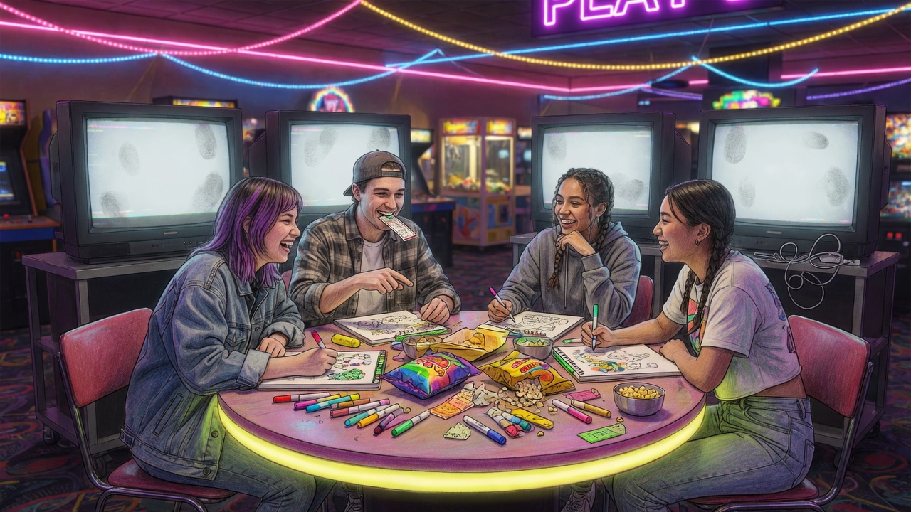

Pictionary with friends. Already implemented.
Build: pictionary_party_game (7).html
No authentic in-round screenshot or footage yet. Illustrated cover stays on the floor. Lifestyle still is hero art, not gameplay. Owner can drop a real board capture later.
Draw, guess, next round. Local multiplayer in the HTML.
Illustrated cover is marketing. Need a real drawing-round shot.
Comments / profiles / saves — not built. Version history will live here.